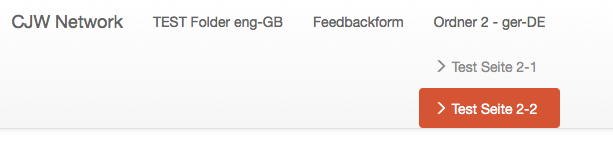
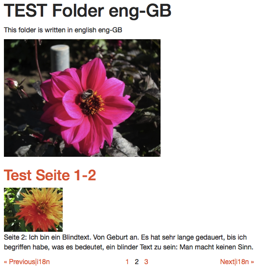

Presenters
- Ekke is a consultant with deep knowledge in eZ Publish 4 and 5, eZ Find / Apache Solr and with a faible for coming cutting edge web technologies. He is one of the organizers of the PHP Unconference since eight years.
-
Donat is owner of Webmanufaktur, a full service web agency in Switzerland. He works as projects manager, software architect and developer and likes thinking outside of the box. In the last year he has been involved in major pure eZ 5 projects.
-
Members of CJW Network
Multiple Colors of Migration
- There are still many (too much) eZ Publish legacy sites
- eZ Publish 5.4 / 2014.11 is supported until May 2019
- So there is a stable business base for the next 4 years
- And since one year in internet is seven years in real live, 28 years of best business!
-
Why waiting? OK, we try to help you with arguments and know how
-
https://github.com/cjw-network/cjw-summercamp-slides/blob/master/Multiple-Colors-of-Migration.pdf
Who is in the audience?
Let us know you better ...
- Who has realized eZ Publish 5 sites (productive)?
- Who has realized pure eZ Publish 5 sites (no legacy)?
Agenda
Things we would like to discuss:
- Reasons for not waiting any more
- Run legacy only
- Run eZ Publih 5 Symfony stack only
- Your fast (easy) way to pure TWIG Templates
- If there is time: Multi-Site/Multi-Repository Setup
Why waiting?
Pro and cons
What are the problems?
Still hard to start but we prepared a lot
- no starting point: a good eZ Publish version like 4.7 is missing -> cjwpublish1411
- https://github.com/cjw-network/cjwpublish1411
- many logic is in templates, everything new, everything different?
- no multi site / multi repository setup
- performance, performance, performance,
Why waiting?
Financial reasons - How to sell it to your customer?
- update / upgrade - but still no new feature for editors
-
many security fixes - but often part of maintenance support
-
Relaunch: Make responsive, look at http://getbootstrap.com or http://foundation.zurb.com/
- Relaunch: Mobile first, it is coming to marketing people
- new feature mobile editing
- Do you have one more?
Why waiting?
Technical reasons for starting now
- it is on the upgrade path to eZ Platform 6
- many security and bug fixes
- TWIG for new templates and fallback to old templates when needed
- easy to extend with Symfony bundles, there are more than 2500 on e.g. http://knpbundles.com/
- switch to responsive web design and make it mobile first
Which version to use?
We need a version as a stable base for the next 4 years
- eZ Publish 5.3 / 5.4 aka 2014.11 is supported until May 2019
- but many fixes are in the legacy bridge (-)
- but newer versions are pre alpha (+)
- but there is no real save version to switch (-)
- solution take our cjwpublish1411 and help to keep it fresh (+)
Run legacy only
Run legacy only
Short introduction
- if you only need the bug fixes and security patches in legacy
- our arguments won't convince you or your customer
- the installation has more than 150 extensions
- then link your requests into the legacy folder
- go the upgrade path https://doc.ez.no/display/EZP/Upgrade
- and read more https://doc.ez.no/display/EZP/Legacy+code+and+features
- but we advice you to go to "Run Symfony only"
Run Symfony only
Team up with a Symfony crack
- To be honest: as eZ 4 developers, we are complete novices in eZ 5
- It's easier for a Symfony crack to learn eZ than other way round
- Symfony community is hungry for a CMS, so watch out for new competition
- But @Symfony cracks: It's not easy: an eZ Publish and CMS expert will reduce your risk
- And will make your content architecture better and more maintainable
- OR take the shortcut for integrators
CjwPublishToolsBundle
Your easy way to eZ Publish Symfony
CjwPublishToolsBundle
for integrators of small to medium sites
- He comes from front end design and speaks fluent HTML and CSS
- He has no problems with digging into template languages
- He prefers solutions with all needed functionality
- He wants to develop web sites fast and easy at low cost
- https://github.com/cjw-network/CjwPublishToolsBundle
- go with it:
Treemenu

{% set treemenu = cjw_treemenu( locationId, {
'depth': '2',
'offset': '1',
'include': [ 'cjw_article', 'cjw_folder', 'cjw_feedback_form' ],
'sortby': { 'LocationPriority': 'ASC' },
'datamap': false } ) %}
{% for item in treemenu %}
{{ ez_content_name( item.node.contentInfo ) }}
{% endfor %}
Breadcrumb
cjw_breadcrumb

{% set path = cjw_breadcrumb( locationId, { 'offset': '1',
'rootName': 'Home',
'separator': '' } ) %}
{% for item in path.items %}
{{ item.name }}
{% endfor %}
Folder with line view screenshot

Folder with line view source code
cjw_fetch_content
{% set listChildren = cjw_fetch_content( [ location.id ], { 'depth': '1',
'limit': listLimit,
'offset': listOffset,
'include': [ 'cjw_folder', 'cjw_article', 'cjw_folder_section', 'cjw_file' ],
'language': [],
'datamap': false,
'count': true } )[ location.id ] %}
{% for child in listChildren['children'] %}
{#{{ render( controller( "ez_content:viewLocation",
{'location': child, 'viewType': 'line'} ) ) }}#}
{{ cjw_render_location( {'location': child, 'viewType': 'line'} ) }}
{% endfor %}
content fetch ezp 4.x smarty
{def $node_id = 2
$limit = 10
$offset = 10
$depth = 5
$include = array( 'article' )
$list_items = fetch( 'content', 'list', hash( 'parent_node_id', $node_id,
'depth', $depth,
'limit', $limit,
'offset', $offset,
'class_filter_type', 'include',
'class_filter_array', $include,
'sort_by', array( 'published', true() ) ) )
$list_count = fetch( 'content', 'list_count', hash( 'parent_node_id', $node_id,
'depth': $depth,
'class_filter_type', 'include',
'class_filter_array', $include ) )
$parent_node = fetch( 'content', 'node', hash( 'node_id', $node_id ) ) }
{foreach $list_items as $item}
{$item|attribute( show, 5 )}
{/foreach}
cjw_content_fetch ezp 5.x twig
{% set location_id = 2 %}
{% set limit = 10 %}
{% set offset = 10 %}
{% set include = [ 'article' ] %}
{% set depth = 5 %}
{% set content_object = false %}
{% set list_items = cjw_fetch_content( [ location_id ], { 'depth': depth,
'limit': limit,
'offset': offset,
'include': include,
'sortby': [ [ 'DatePublished', 'DESC' ] ],
'parent': true,
'count': true } ) %}
{% set list_count = list_items[ location_id ][ 'count' ] %}
{% set parent_location = list_items[ location_id ][ 'parent' ] %}
{% for item in list_items[ location_id ][ 'children' ] %}
{# show the location object, if you use the "'datamap': true" parameter, this will show the content object #}
{{ dump( item ) }}
{# example for getting the content object for this location, if needed #}
{#
{% set content_object = cjw_load_content_by_id( item.contentInfo.id ) %}
{{ dump( content_object ) }}
#}
{% endfor %}
Pagination (was called Google navigator)

Article full view screenshot

Article full view source code
{% extends site_bundle_name ~ '::pagelayout.html.twig' %}
{% block content %}
{% if content.fields.title is defined and not ez_is_field_empty( content, 'title' ) %}
{{ ez_field_value( content, 'title' ) }}
{% endif %}
{% if content.fields.short_description is defined and not ez_is_field_empty( content, 'short_description' ) %}
{{ ez_render_field( content, 'short_description' ) }}
{% endif %}
{% if content.fields.image is defined and not ez_is_field_empty( content, 'image' ) %}
{{ ez_render_field( content, 'image',
{parameters: {alias: 'medium', class: 'imageleft'}} ) }}
{% endif %}
{% endblock %}
title: Feedback Form (infocollector) I subtitle: what is it doing
- cjw_feedback_form with infocollector using CjwPublishToolsBundle eZP content type mapping to symfony form handling
-
Symfony form validation and form rendering is used
-
ez contenttype cjw_feedback_form with infocollector attributes will be render a symfony form which will store content into infocollector table and will send an email
Feedback Form (infocollector) II
Define custom formbuilder.yml which will be load for this project src/Cjw/SiteCjwpublishBundle/app/config/parameters.yml
parameters: # Filepath + -name for formbuilder Config, from EZROOT directory # => sitaccessaware config # set default config for all siteaccesses can be overitten by siteaccess # or siteaccessgroup if you need a separate formbuilderconfig cjw_publishtools.default.formbuilder.config_file: src/Cjw/SiteCjwpublishBundle/Resources/config/formbuilder.yml
Feedback Form (infocollector) III
example for defining an infocollector for of ezpublish content type / class 'cjw_feedback_form src/Cjw/SiteCjwpublishBundle/Resources/config/formbuilder.yml
formcollector_config:
parameters:
button_config:
save_button:
label: cjw_publishtools.formbuilder.default.button.send
cancel_button: false
types:
cjw_feedback_form:
handler:
infocollector:
success:
template: :form:success.html.twig
sendmail:
email_sender: test@test.com
email_subject: 'Collected Information from cjwpublish.com'
Feedback form - template
- take the standard Symfony form(form) in TWIG template
{% extends site_bundle_name ~ '::pagelayout.html.twig' %}
{% block content %}
{{ form(form) }}
{% endblock %}
formbuilder
- forms can be defined in a yaml file or as a content class with infocollector fields
- stackable handler: send email, add to infocollector (needs orm), success
- forms defined via content classes can use the eZ Publish build in template override mechanism
- easy to use frontend editing (add and edit content)
- easy to use user register
- hacking php classes is not needed
Frontend editing Edit User - configuration
- src/Cjw/SiteCjwpublishBundle/Resources/config/formbuilder.yml
-
frontendediting_config: parameters: template: :edit.html.twig handler: success: handler_class: successHandler template: ':email:user_register.html.twig' types: cjw_user: parameters: template: :user:edit.html.twig handler: fields: - first_name - last_name - user_account
Frontend editing Edit User - template
- take the standard Symfony form(form) in TWIG template
{% extends site_bundle_name ~ '::pagelayout.html.twig' %}
{% block content %}
{{ form(form) }}
{% endblock %}
A short walk through to Multi language
A short walk through to multi language
Using the translation system.
-
translations for static strings => formbuilder uses the trans system from symfony
-
src/Cjw/PublishToolsBundle/Resources/translations/messages.de.yml Deutsch
- src/Cjw/PublishToolsBundle/Resources/translations/messages.en.yml English
A short walk through to multi language
How to translate strings using the messages file.
- ../Resources/translations/messages.de.yml
-
cjw_publishtools.formbuilder.user.email: 'Die E-Mail-Adresse'
- ../Resources/translations/messages.en.yml
-
cjw_publishtools.formbuilder.user.email: 'E-Mail-Address'
- TWIG template
-
{{ 'cjw_publishtools.formbuilder.user.email'|trans }}
Performance
cjw_render_location vs. subcontroller calls
-
e.g. render( controller( ... calls in twig => every subcontroller call costs a lot of time between 30 - 100 ms so for a loop with 10 line view you can often save 1 second ! if you use a normal template include or our
-
cjw_render_location twig function which uses the override system from ez like the render( controller( "ez_content:viewLocation", {'location': child, 'viewType': 'line'} uses
- avoid stash calls if you can e.g. to give the location or content as an parameter in stead of the location id
Multi-Site/Multi-Repository Setup
Why a Multi-Site/Multi-Repository Setup?
- At CJW Network we have developed a multi-site/multi-repository setup for eZ Publish 4 several years ago
- This allows us to host many individual sites on a single eZ Publish installation
Advantages:
- Central site administration (site activation, cronjobs, ...)
- Easy deployment (update site extension with Subversion)
- Highly reduced maintenance costs (security patches, upgrades)
- Highly efficient use of hardware resources
Disadvantages:
- Some Kernel patches needed
Multi-Site/Multi-Repository Setup in eZ 5
First Approach 2014 (proven in production and depreciated)
- Use different ezpublish app directories to host the different sites
Second approach 2015 (proven in production)
- Use
CJW MultiSiteBundle - https://github.com/cjw-network/cjwpublish1411/tree/master/src/Cjw/MultiSiteBundle
CJW MultiSiteBundle Features
- Boots kernel and environment based on domain name mappings
- Handles local, staging and live domain names
- Allows for global activation of bundles
- Allows for global settings
- Provides a common console for all sites
- Caches domain name mappings
- Moves cache and log files away from the ezpublish folder
- more to come ...
Directory structure
The name of the project is cjwpublish.
- Bundle: src/Cjw/CjwSiteCjwpublishBundle
- ProjectName: cjwpublish
- VarFolder: ezpublish_legacy/var/cjwpublish
- CacheFolder: ezpublish_legacy/var_cache/cjwpublish
- LogFolder: ezpublish_legacy/var_log/cjwpublish
Prod and Dev Environment -> Prod
Access to english/german frontend and backend siteaccesses
Production:
http://www.cjwpublish.com/ => en
http://www.cjwpublish.com/en
http://www.cjwpublish.com/de
http://www.cjwpublish.com/admin_en
http://www.cjwpublish.com/admin_de
Prod and Dev Environment -> Dev
- Development: MatchingRule matching begins with www.cjwpublish.com./de* is matching de german siteaccess
- so every developer can be access if the dev computer can be access by default local dns entry
- e.g. .fw.lokal and if the vhost matches all .cjwpublish1411.*
-
the following url can be accessed
http://www.cjwpublish.com.cjwpublish1411dev.fw.lokal/ => en http://www.cjwpublish.com.cjwpublish1411dev.fw.lokal/en
http://www.cjwpublish.com.cjwpublish1411dev.fw.lokal/dehttp://www.cjwpublish.com.cjwpublish1411dev.fw.lokal/admin_en http://www.cjwpublish.com.cjwpublish1411dev.fw.lokal/admin_de
Access to multisite ezpublish console
is the same as php ezpublish/console but only for multitsitesetup to call the kernel from src/Cjw/CjwSiteCjwpublishBundle
php cjwpublish/console-cjwpublish
php cjwpublish/console-$ProjectName
de / en siteaccess host/uri matching I
# src/Cjw/SiteCjwpublishBundle/Resources/config/site.yml
ezpublish:
siteaccess:
# cjwpublish_user__en
default_siteaccess: %cjwsite.name.project%_user__en
list:
- %cjwsite.name.project%_user__en
- %cjwsite.name.project%_user__de
- %cjwsite.name.project%_admin__en
- %cjwsite.name.project%_admin__de
groups:
%cjwsite.name.project%_user_group:
- %cjwsite.name.project%_user__en
- %cjwsite.name.project%_user__de
%cjwsite.name.project%_admin_group:
- %cjwsite.name.project%_admin__en
- %cjwsite.name.project%_admin__de
de / en siteaccess host/uri matching II
# src/Cjw/SiteCjwpublishBundle/Resources/config/site.yml
# https://doc.ez.no/display/EZP/Siteaccess+Matching
match:
# www.cjwpublish.com.cjwpublish1411.fw.lokal \Cjw\MultiSiteBundle\Matcher\MapHost: => begins_with
# www.cjwpublish.com.cjwpublish1411.fw.lokal/de/ => www.cjwpublish.com/de => siteaccess: cjwpublish_user__de
# www.cjwpublish.com.cjwpublish1411.fw.lokal/ => www.cjwpublish.com/en/(default) => default uri en => siteaccess: cjwpublish_user__en
\Cjw\MultiSiteBundle\Matcher\MapHostURI:
www.cjwpublish.com/en/(default): %cjwsite.name.project%_user__en
www.cjwpublish.com/de: %cjwsite.name.project%_user__de
www.cjwpublish.com/admin_en: %cjwsite.name.project%_admin__en
www.cjwpublish.com/admin_de: %cjwsite.name.project%_admin__de
cjwpublish.com/en/(default): %cjwsite.name.project%_user__en
cjwpublish.com/de: %cjwsite.name.project%_user__de
cjwpublish.com/admin_en: %cjwsite.name.project%_admin__en
cjwpublish.com/admin_de: %cjwsite.name.project%_admin__de
Ressources
Slides as PDF
Slides (Source)
CJW MultiSiteBundle
CJW Publish for quick start
http://events.netgen.io/
Please Vote!
<Thank You!>
Ekkehard Dörre
http://share.ez.no/community/profile/7431
@ekkeD
http://www.coolscreen.de
Donat Fritschy
https://github.com/dfritschy
http://share.ez.no/community/profile/10451
@webmanufaktur
http://www.webmanufaktur.ch